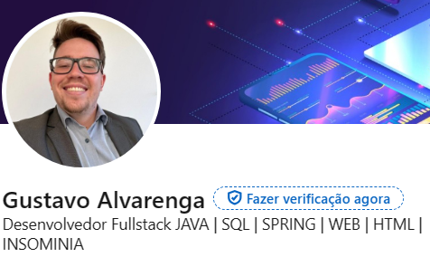

Bem vindo ao espaço de Gustavo Alvarenga Dev. Jr.!
Meu nome é Gustavo Alvarenga e trago uma ampla experiência de 3 anos como Gerente de QA (Qualidade) e
Melhoria Contínua, onde não apenas gerenciei equipes, mas também desempenhei funções de auditoria
interna/externa e conduzi certificações no setor metrológico. Além disso, acumulei 2 anos como Supervisor
de Entrega de Serviços, sempre mantendo o foco na qualidade dos processos. Minha formação inclui um
bootcamp intensivo de desenvolvimento fullstack pela Generation Brasil, onde adquiri competências em Java,
SpringBoot, MySQL, Insomnia, HTTP, HTML, Bootstrap, React, Git e Web. Tenho habilidades sólidas nas áreas
de qualidade e certificações, combinadas com conhecimentos avançados em desenvolvimento de software.
Atualmente, estou cursando Análise e Desenvolvimento de Sistemas para expandir ainda mais meu conjunto de
habilidades e conhecimentos.
Aqui você encontra alguns de meus conhecimentos e desolvimentos em:
Java, Spring Boot, HTML5, NodeJs, ReactJs, CSS.
Abaixo voce pode acessar minhdas redes
Bem como GitHub e Linkedin
- Git Hub: Gustavo alvarenga | User: Gstalva
- Linkedin: Gustavo alvarenga

Abaixo segue alguns de meus projetos
Projeto BlogPessoal em Java, Spring Boot
Projeto de e-commerce para uma Farmacia
Projeto de e-commerce para uma Loja de Games
Também pode encontrar em meu GitHub um projeto em grupo para uma proposta de e-commerce
para vender e fornecer auxilio para pessoas que são dependentes quimicos
Acesso ao projeto para o auxilio a dependentes
Se quiser Desenvolver um projeto ou tirar alguma dúvida entre em contato comigo preenchendo o formulario abaixo: